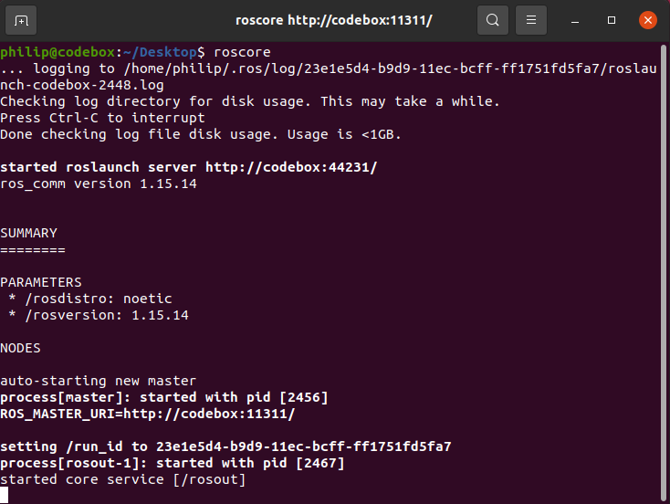
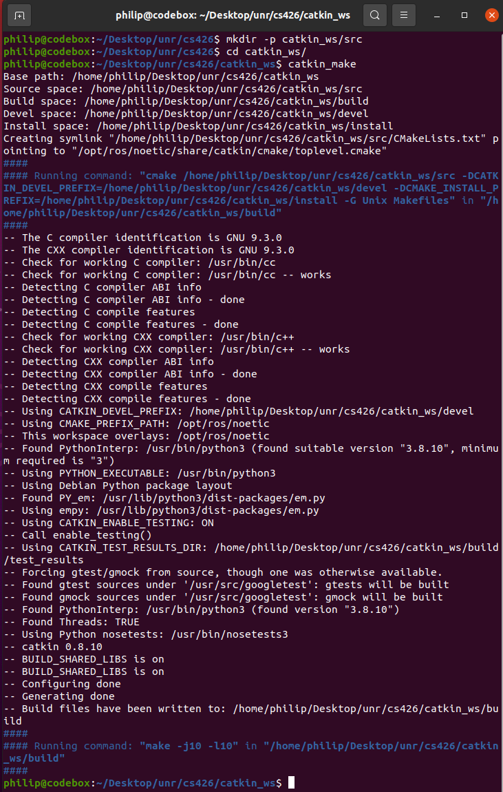

Launching HTT-Viz is a multi-step process. The following launch tutorial assumes that
you have already installed both ROS Noetic and PYQT Version 5. Click the links if you
still need to install either.
Step 1: Launch Roscore
The first step to laucnhing HTT-Viz is launching roscore. To do this, write "roscore"
in the terminal. After running roscore, let this terminal run in the background.
The output should look like the below image.

Step 2: Catkin Workspace
Open a second terminal, and travel to the directory in which you wish to
store HTT-Viz. Here, run the command "mkdir -p catkin_ws/src" to create both
the workspace and source folders. Now, navigate to catkin_ws, and run the
command "catkin_make". The output should look like the below image.

Step 3: Download HTT-Viz
If you have already downloaded HTT-Viz, move it to the recently created src
folder. If you haven't already downloaded it, either do so now, or run the
command "git clone https://github.com/tylerjohnbecker/htt-viz" while within the
src folder, assuming you have git installed. You should now see a folder titled
"htt-viz" within the src folder.
Step 4: Launch HTT-Viz
Finally, navigate back to the "catkin_ws" folder. Here, run the command
"souce devel/setup.bash". Now, your environment is ready to run HTT-Viz. The final
command you need to run is "rosrun htt_viz htt_viz". This will launch the program.
Important Notice
When launching HTT-Viz in the future, the only steps you will have to repeat
are Steps 1 and 4. Steps 2 and 3 were only necessary before the first launch.